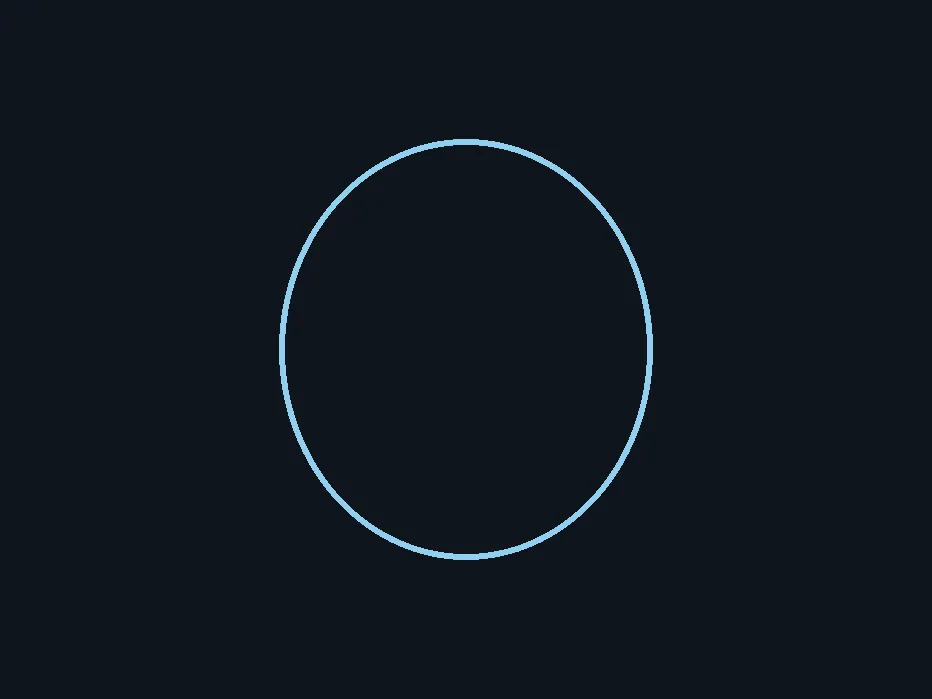

Jet engines
How the biggest airliner engine makes its thrust
Your tongue finds sweet and a little sour, and nerves feel the cold. The cherry itself is a smell that reaches your nose from inside your mouth.
- Suck
- Squeeze
- Burn
- Spin
- Blow

Jet engines
Your tongue finds sweet and a little sour, and nerves feel the cold. The cherry itself is a smell that reaches your nose from inside your mouth.
whatmakesittick.github.io/ge9x-turbofan